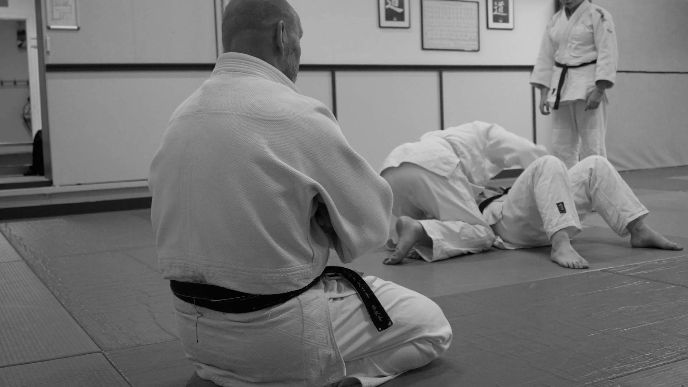

Judo & A-Judo
Kracht, discipline en respect, voor iedereen, met een eigen aangepaste vorm voor sporters met een beperking.
Meer over judo →
Sportcentrum Rust in Den Haag. Kijk gerust rond, en neem contact met ons op als u vragen heeft!
De eerste les is gratis.
Van judo tot yoga, van kickboksen tot krachttraining: voor elke leeftijd en elk niveau is er een les die past.
Kracht, discipline en respect, voor iedereen, met een eigen aangepaste vorm voor sporters met een beperking.
Meer over judo →Een Japanse krijgskunst zonder stoten of trappen: leer een aanval om te buigen in plaats van te forceren.
Meer over aikido →Techniek, tactiek en conditie in de ring, voor mannen én vrouwen, van beginner tot gevorderd.
Meer over kickboksen & boksen →Grondgevecht waarbij techniek wint van kracht: geduld, balans en scherp nadenken onder druk.
Meer over BJJ →Balans, kracht en lenigheid, in een tempo dat bij jou past.
Meer over yoga & bodybalance →Afwisselende training die kracht, conditie en lenigheid combineert, nooit twee keer hetzelfde.
Meer over cross training →Gestructureerde krachttraining, gericht op functionele kracht die je ook buiten de les gebruikt.
Meer over strength →Eén les, heel je lichaam: intensief, afwisselend, zonder stilstand.
Meer over total body circuit →